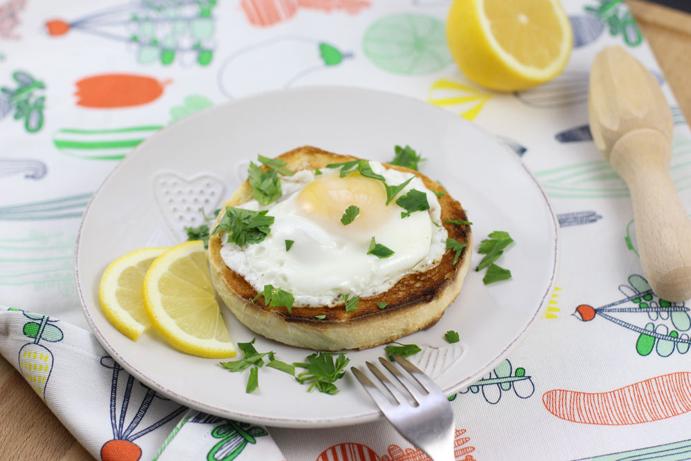

Cele 2 ingrediente care fac din niste oua ochiuri obisnuite, un mic dejun desavarsit!
Care este secretul meu pentru niste oua ochiuri delicioase? O sa-l gasiti in randurile de mai jos.
Da, stiu, o sa spuneti ca nu este nevoie de o reteta pentru a face un ou ochi simplu si ca toata lumea stie sa faca asta. Este poate printre primele lucruri pe care le invatam in bucatarie cu totii. Este foarte adevarat si nu imi doresc sa va dau o reteta. Departe de mine acest gand .
Nu vreau sa intru nici in detalii sau sfaturi despre cum se fac ouale prajite perfecte. In ulei de masline sau nu, cu unt sau nu, facute in tigaie antiaderenta, intoarse sau nu, moi sau tari. Fiecare are metoda lui si le face asa cum ii plac cel mai mult.
Insa vreau sa va spun ca eu am ajuns sa zic ca am o reteta perfecta de oua ochiuri. Daca o putem numi asa. De fapt este un mic truc folosit de mine in bucatarie atunci cand pregatesc oua.
Inspiratia a venit in vremea facultatii cand mama unei prietene ne-a pregatit un banal mic dejun cu oua ochiuri. Asa am zis initial dar mi-am schimbat parerea imediat ce ne-a asezat la masa si am gustat. Erau perfect aromate, deloc gretoase de la uleiul in care au fost prajite. Secretul lor era ca dupa ce fusesera prajite, au fost frumusel stropite cu zeama de lamaie si aromate cu cateva fire de patrunjel tocate marunt.
Oooau … mi-am zis. Este combinatia perfecta : oua, lamaie si patrunjel (zeama de lamaie si patrunjelul le adaugati imediat ce ati pus oul prajit in farfurie)
Cel mai simplu mic dejun

Iar daca le asezam frumos pe o felie de paine prajita, uite chiar obtinem un preparat dragut, nu?
Si acum daca pregatim oua ochiuri sau omleta pentru micul dejun sau pentru o mancare de spanac sanatosa folosesc aceeasi reteta invariabil.


No Comments